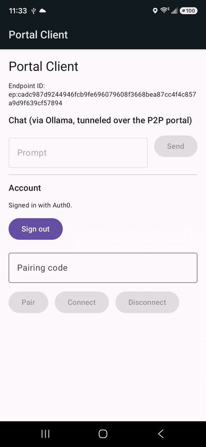
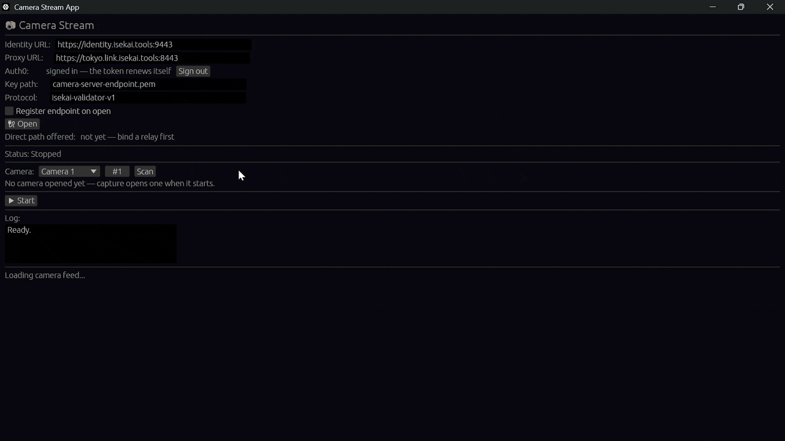
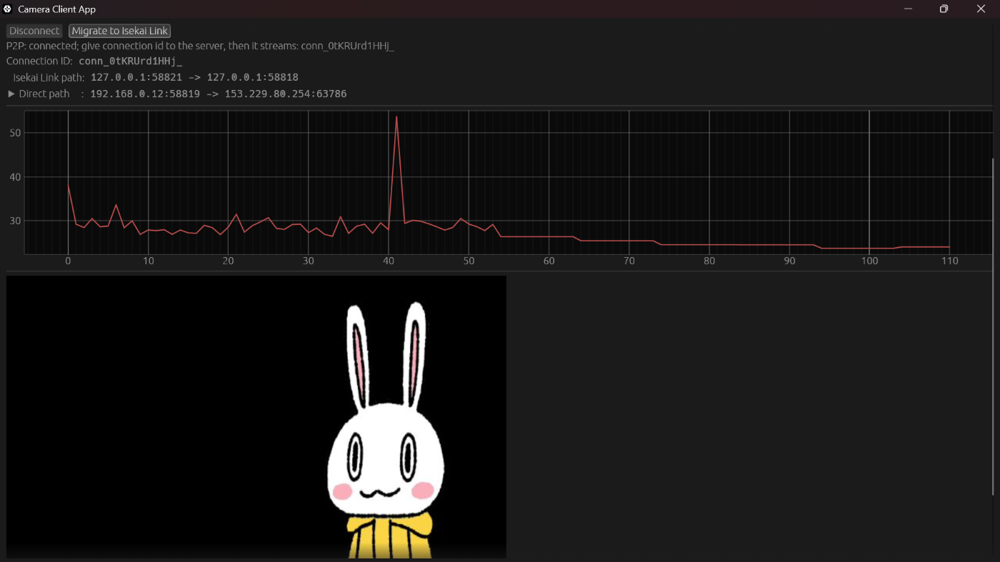

The connection layer for AI agents and devices.AIエージェントとデバイスのための接続レイヤー
Secure remote access to one service, not a whole network. Reach any device or service behind NAT or a firewall with no open ports, no VPN and no IP setup. Connect first, go direct next.ネットワーク全体ではなく、必要な1つのサービスだけに安全にリモートアクセス。NATやファイアウォールの内側にあるデバイスやサービスに、ポート開放・VPN・IP設定なしで接続できます。まずつながり、次に直結へ。
1 · Connect via relay1・リレーで接続2 · Go direct, mid-stream2・通信中に直結へLatency遅延
Products製品
Three products, one idea: share access, not data3つの製品、共通の考え方：渡すのはアクセスだけ
The problem課題
Reaching a device over the internet is still the hard partインターネット越しにデバイスへつなぐのは、今も難しい
Devices hide behind NATデバイスはNATの内側にある
Robots, cameras and lab machines sit behind routers and firewalls, with no public address and no open port.ロボットやカメラ、実験機器はルーターやファイアウォールの内側にあり、グローバルアドレスも開いたポートもありません。
VPNs are heavy to runVPNは運用が重い
Every device needs accounts, keys and routes, and traffic still detours through a gateway.デバイスごとにアカウント・鍵・経路の設定が必要で、通信はゲートウェイを遠回りします。
Relay-only paths add distanceリレー専用の経路は遠回り
Some services keep every packet on their network for the whole session, even when the two ends could talk directly.両端が直接通信できる場合でも、セッション中のすべてのパケットを自社ネットワーク経由にするサービスがあります。
How ISEKAI worksISEKAIのしくみ
Connect first, go direct nextまずつながり、次に直結へ
Connects from anywhereどこからでもつながる
Every session starts on a relay. No port to open, no firewall rule, no address to exchange.すべてのセッションはリレーから始まります。ポート開放もファイアウォール設定もアドレス交換も不要です。
Goes direct when it can可能なら直結する
The session moves onto a peer-to-peer path mid-stream, without reconnecting. The relay stays as the fallback.通信を切らずにP2P経路へ移行します。リレーはフォールバックとして残ります。
Handles network changesネットワークの切り替えに対応
Switch from WiFi to cellular and the app reconnects on its own. The conversation carries on.Wi-Fiからモバイル回線に切り替わっても、アプリが自動で再接続し、会話はそのまま続きます。
Secure by design設計段階からセキュア
Person and device sign-in, a key on every device, proof of possession on every request, and access you can scope, time-limit and revoke. Encrypted end to end over QUIC.ユーザーとデバイスの両方で認証し、すべてのデバイスが自分の鍵を持ち、リクエストごとに鍵の所有を証明します。アクセスは範囲・期限を指定でき、いつでも取り消せます。通信はQUICでエンドツーエンド暗号化されます。
Who it's for対象
Anyone who has to reach a device on a network they don't control自分で管理していないネットワーク上のデバイスにつなぐ必要があるすべての人に
AI agents and private tools.AIエージェントと社内ツール：Give an agent one private service, like an on-prem database, with access that expires and can be revoked.社内DBなど1つのサービスだけを、期限付き・取り消し可能なアクセスでエージェントに渡せます。
Robotics.ロボット：Teleoperation and fleet debugging, where every millisecond of lag shows.遅延が1ミリ秒でも効く遠隔操作やフリートのデバッグに。
IoT and edge devices.IoT・エッジデバイス：Reach devices on your customers' networks without asking for a VPN or an open port.顧客のネットワーク上にあるデバイスに、VPNやポート開放を頼まずに接続。
Where we are現在の状況
Running todayすでに稼働中
Camera and portal apps for Linux, macOS and Windows.Linux・macOS・Windows向けのカメラアプリとポータルアプリを公開中。
Relays live in US West and Tokyo, picked per session.米国西部と東京でリレーが稼働し、セッションごとに最適な方を選択。
Android app in final review, tested WiFi ↔ cellular on a real carrier network.Androidアプリは最終レビュー中。実際のキャリア回線でWi-Fi↔モバイル回線の切り替えを検証済み。
Try it on your own devicesお手持ちのデバイスで試してみませんか
Tell us what you want to connect and we'll help you set it up.接続したいものを教えていただければ、導入をお手伝いします。
Products製品
ISEKAI Link
Betaベータ版
Secure access to one service behind someone else's NAT, for a person or an AI agent. Map a local port onto a TCP or UDP service anywhere, with no port opened at either end.他人のNATの内側にある1つのサービスへ、人やAIエージェントが安全にアクセス。どこにあるTCP/UDPサービスでもローカルポートに割り当てられ、どちらの側でもポート開放は不要です。
Accessアクセス
Grants to one named service, time-limited and revocable. No network to join.名前付きの1サービス単位で許可。期限付きで取り消し可能。ネットワークへの参加は不要。
Path経路
Relay first, then a direct peer-to-peer path when one exists.まずリレーで接続し、可能ならP2Pで直結。
Platforms対応環境
Linux, macOS, Windows. Android in final review.Linux・macOS・Windows。Androidは最終レビュー中。
Next今後
MCP servers and agent-to-agent connections.MCPサーバー対応、エージェント同士の接続。
Want to try it?試してみませんか
Tell us what you'd use it for and on what devices.用途と利用予定のデバイスをお知らせください。
Other productsその他の製品
Products製品
ISEKAI Camera
Betaベータ版
Stream live video from a camera on one machine to a viewer on another, with no port opened, no firewall rule and no reachable address at either end.あるマシンのカメラ映像を別のマシンでライブ視聴。どちらの側でもポート開放・ファイアウォール設定・到達可能なアドレスは不要です。
Use cases用途
Robot teleoperation, remote monitoring, lab and field equipment.ロボットの遠隔操作、遠隔監視、研究室や現場の機器。
Path経路
Holds both relay and direct paths and shows which one is in use.リレーと直結の両方の経路を保持し、使用中の経路を表示。
Platforms対応環境
Desktop apps for Linux, macOS and Windows. iOS and Android viewers in development.Linux・macOS・Windows向けデスクトップアプリ。iOS・Androidのビューアを開発中。
Pairingペアリング
Viewers pair with a camera once; access can be revoked any time.ビューアは一度ペアリングするだけ。アクセスはいつでも取り消し可能。
Want to try it?試してみませんか
Tell us what you'd use it for and on what devices.用途と利用予定のデバイスをお知らせください。
Other productsその他の製品
Products製品
ISEKAI ComputeISEKAI計算
Free demo無料デモ受付中
Let analysts run their processing on your data without ever giving them the data. Each job runs in an isolated ISEKAI environment, separated by encryption and an execution policy.データを提供せずに、多彩な分析・処理を実現。データ提供者は、分析者が処理を行うたびに、暗号化と実行ポリシーで分離された「ISEKAI」のデータ処理環境にデータを提供します。
Data provider
Owns the table data and never hands it over in the clear.
1 · Encrypted data
3 · Notified of each analysis
ISEKAI Compute
x9#Qe;r.12w4@f[k
Runs the analysis on encrypted data inside a TEE, an environment no one can see into from outside.
2 · Analysis to run OLS, logistic regression and more
4 · Results only
Data analyst
Gets the analysis results, but never sees the underlying data.
Data is processed inside a TEE (Trusted Execution Environment) while still encrypted, so not even the server's administrator can see it.データはTEE（Trusted Execution Environment）環境下で暗号化されたまま処理されるため、サーバ管理者でも盗み見ることはできません。
Policy controlsポリシーによる制御
Policies limit which analysis may run and what the results may reveal, to prevent leaks.ポリシーで分析・処理の内容と出力結果を制限し、データの漏洩を防ぎます。
Architecture設計
A secure design built from WebAssembly (WASM) components.WASM（WebAssembly）コンポーネントを利用したセキュアな設計。
Your code既存コードを活用
Existing Python analysis code can be used.データ分析には既存のPythonコードを活用できます。
Want to try it?試してみませんか
Tell us what you'd use it for and on what devices.用途と利用予定のデバイスをお知らせください。
Other productsその他の製品
About会社概要
Seera Networks builds ISEKAI Link, which makes reaching a device or a service as simple as naming it.セーラ・ネットワークス株式会社では、（ISEKAI link）を開発し、デバイスやサービスへの接続を、名前を指定するだけのシンプルなものにします。
Our approach私たちのアプローチ
Access to one service, not a whole networkネットワーク全体ではなく、1つのサービスへのアクセス
Most remote-access tools put you on a network and then narrow what you can reach. We start from the other end: a grant to one named service, for a person or an AI agent, that expires on its own and still goes direct.多くのリモートアクセスツールは、まずネットワークに参加させてから到達範囲を絞ります。私たちは逆から始めます。人やAIエージェントに、名前付きの1つのサービスへのアクセスを許可し、その許可は自動で期限切れになり、通信は直結します。
Transport depth.通信技術への深い知見：QUIC, multipath and connection migration, from our own work on MsQuic.独自のMsQuic開発で培ったQUIC、マルチパス、コネクションマイグレーションの技術。
Security first.セキュリティ優先：Identity comes from keys that never leave the device.デバイスの外に出ない鍵をもとにIDを確立。
Built in the open.オープンな開発：Our code is on GitHub and our design notes are on Zenn.コードはGitHub、設計の解説はZennで公開しています。
US and Japan.日米2拠点：Our team and our relays run in both, so someone is always awake for customers.チームもリレーも日米両方にあり、いつでも誰かが対応できます。
Company会社情報
Company name社名
Seera Networks, Inc. セーラ・ネットワークス株式会社 Founded August 2020設立：2020年8月
Address所在地
6-23-4 Jingumae, Shibuya-ku, Tokyo, Japan東京都渋谷区神宮前6-23-4 Team also in San Franciscoサンフランシスコにもメンバー在籍
Business事業内容
Secure connectivity for AI agents and devices, and secure data processingAIエージェントとデバイスのためのセキュアな接続サービス、セキュアなデータ処理基盤
Teamチーム
Six people across Japan and San Francisco日本とサンフランシスコの6人のチーム
Many of us come from Kyoto University, one of Japan's leading research universities, and several bring 20+ years each of industry and academic experience in networking and security. Together, we balance frontier research with real-world practice.メンバーの多くが京都大学の出身です。ネットワークとセキュリティの分野で、それぞれ20年以上の産業界・学術界での経験を持つメンバーも複数います。最先端の研究と現場での実践、その両方をバランスよく備えたチームです。
MK
Makiko Kozuka小塚 真木子
CEO · JapanCEO・日本
LM
Lisa Matsuoka松岡 梨沙
Japan日本
YH
Ying Huang黄穎
San Franciscoサンフランシスコ
MK
Masahiro Kozuka小塚 真啓
Japan日本
TK
Tomoya Kawanishi川西 智也
Japan日本
KO
Kenji Ohira大平 健司
Japan日本
Experience専門分野
What we've worked onこれまで取り組んできた分野
SCTP
Ultra-low-latency networks超低遅延ネットワーク
Network simulatorsネットワークシミュレータ
QUIC
Multipath transportマルチパス通信
Intrusion detection侵入検知
CDN
How we work働き方
Distributed and autonomous分散型・自律型のチーム
We work across Japan and San Francisco, so someone is always awake for customers.日本とサンフランシスコの両方で働いているので、いつでも誰かがお客様に対応できます。
Blogブログ
Engineering notes技術ブログ
How ISEKAI products are built, written by the people building it.ISEKAI製品の作り方を、開発メンバー自身が書いています。
Tunneling LLM Chat Over MASQUE: the ISEKAI Portal ClientTunneling LLM Chat Over MASQUE: the ISEKAI Portal Client
· この記事は英語のみです
Tunneling LLM Chat Over MASQUE: the ISEKAI Portal Client
ISEKAI link is Seera Networks' service for connecting devices on different networks over QUIC: it handles authentication and connection brokering, and relays traffic for peers that can't reach each other directly. The relay speaks MASQUE, the IETF's family of HTTP/3-based proxying protocols (here CONNECT-UDP, RFC 9298), so a peer's own QUIC connection travels tunneled inside the relay's. Its first application was a live-video camera pair, covered in the previous article.
The ISEKAI Portal client is the second, and it carries request/response traffic instead of a one-way video stream: a small Android chat app that forwards HTTP requests to a locally running Ollama instance on a remote box, over the same relay stack. It's built on portal-core and isekai-p2p — the same forwarding protocol and session/relay machinery the camera apps use — proving out the general-purpose half of ISEKAI link: instead of a hardcoded video path, an operator declares a named service in a catalogue, and any paired peer can reach it as if it were local.
flowchart LR
A["Android app<br/>(chat UI)"] -- "HTTP to 127.0.0.1" --> F["portal-client-ffi<br/>(local forwarder)"]
F -- "inner QUIC<br/>ALPN isekai-portal-v1" --> R["ISEKAI link relay<br/>(MASQUE CONNECT-UDP)"]
R --> S["portal-server<br/>(Jetson)"]
F -. "direct path, when one validates" .-> S
S -- "TCP" --> O["Ollama<br/>127.0.0.1:11434"]
Every session starts on the relay and moves to a direct path when one validates. In the demo below, the phone starts on the same Wi-Fi network as the Jetson; after it switches to 5G, the reconnected session stays on the relay.

An Android phone pairs with the Jetson and asks two questions over Wi-Fi, then switches to 5G mid-session; the app reconnects through the relay, and a follow-up question is answered from the chat history.
Reusing the Relay, Changing the Stream Shape
portal-core's forwarding model is deliberately generic: one bidirectional QUIC stream per TCP connection, and datagrams keyed by session id for UDP. That's a different shape from camera-client's one-unidirectional-stream-per-frame design — there's no "drop the stale frame" logic here, because a chat request isn't live media, it's a regular request/response HTTP exchange that just happens to be tunneled. The relay, certificates and pairing underneath (isekai-p2p) serve both without change — portal even reuses the camera's P2P protocol string. What portal adds sits on top: its own inner ALPN (isekai-portal-v1, so a peer that speaks neither video nor portal fails at the handshake rather than mid-stream), the forwarding protocol in portal-core, and the service catalogue.
The Catalogue Is the Whole Policy
This build runs on an NVIDIA Jetson Orin Nano, an edge board small enough to sit on a desk with enough GPU to run a local LLM. Nothing in the design depends on it, though: any on-premise machine that can run the model works just as well, such as a Mac mini or an AMD Ryzen AI Halo. The Jetson runs portal-server, started with a service catalogue that declares exactly one entry:
The client asks for a service by name ("ollama") — never an address — so a paired peer can reach only what the catalogue explicitly offers, and the initiator can never name an arbitrary target. This catalogue is deliberately kept out of portal-server's default config path/name specifically because Ollama has no auth of its own — a catalogue picked up silently by an operator who forgot --config would hand a raw local LLM endpoint to any paired peer.
The catalogue draws the line at ports, not at requests. Forwarding is plain layer 4: portal-server copies bytes between the tunnel and 127.0.0.1:11434 without reading them, so a paired peer gets the whole Ollama API — not just /api/chat, but /api/pull, /api/delete and /api/create too. Limiting individual endpoints would take an HTTP-aware proxy in front of Ollama, which is outside this layer's job. What the design does control is who gets in and where the port lives: only a peer that redeemed a pairing code the operator minted (valid for at most five minutes, and revocable afterwards with portal-server --revoke) can open the tunnel, and Ollama stays bound to 127.0.0.1, so it is never exposed on the LAN.
Streaming as a Liveness Signal
The first working version used Ollama's stream: false and waited for the whole reply. It didn't just look broken — a minute or more of silence over the tunnel made non-streamed replies fail outright. Switching to stream: true (Ollama's newline-delimited-JSON streaming format) fixed it without changing total latency; what changed is the time to first token. Real bytes now cross the tunnel continuously while the model generates, the same principle behind the camera product's decision to keep relay keepalives flowing rather than let a path go quiet. The app still allows 90 seconds per read, enough to cover a cold model load, which alone took about 40 seconds on the Jetson.
Model Choice Is Just a Config String
The model running this time is qwen3.5:4b — chosen because it fits comfortably in this Jetson Orin Nano's unified memory (shared by its CPU and GPU) alongside everything else sharing the box, not because anything upstream of Ollama cares which model it is. Neither portal-core's forwarding nor the client's HTTP layer look at the model name beyond passing it through in the /api/chat request body. Any open-weights model works as a drop-in replacement, as long as it fits the on-premise GPU/NPU hardware it's meant to run on — the tradeoff is entirely local (memory budget, cold-load time, tokens/sec), not architectural.
Multi-Turn Memory Is Resent, Not Stored
Ollama keeps no state between requests on either /api/generate or /api/chat — a client has to resend everything it wants remembered. The first version of this app didn't: every request went to /api/generate with only the current turn's text, so each reply was effectively the first message the model had ever seen.
The fix switched the client to /api/chat and resends the whole conversation on every turn, with the new question last:
{"model": "qwen3.5:4b", "stream": true, "messages": [ {"role": "user", "content": "whats your model"}, {"role": "assistant", "content": "I am Qwen3.5."}, {"role": "user", "content": "what was the question I asked previously?"}]}
Each streamed line's text then arrives under message.content instead of /api/generate's flat response field.
I verified it with the simplest test that proves memory rather than plausible continuation: I told the model "My favorite color is teal." in one message, asked "What is my favorite color?" in a separate one, and got back "Teal."
The tradeoff this leaves open: the app does no truncation of its own, so the full conversation is resent on every turn. How much of it the model actually sees is bounded on the Ollama side by its context-window setting (num_ctx); past that, Ollama silently drops the oldest turns, and a long enough chat will eventually fail the teal test. Raising num_ctx pushes that point out, but the value should be sized to the local hardware — a bigger context window means a bigger KV cache, competing for the same memory as the model itself. Fine for a demo's scope; a real deployment would want its own truncation or summarization strategy.
Auth, Inherited Wholesale
The endpoint-key/Auth0 device-flow pairing model is identical to camera-client's: a fresh ECDSA key generated on first launch and kept in the app's private storage, an Auth0 sign-in, and a pairing Grant tied to the Endpoint ID rather than the session — meaning it survives portal-server restarts on the Jetson without needing to be re-paired.
Design Philosophy
The interesting result isn't the chat UI — it's that swapping "stream video frames" for "tunnel a stateless HTTP API" left the relay, the pairing model and the certificates untouched. Everything new sat on top of them: an inner ALPN, portal-core's forwarding protocol, and a one-entry catalogue. On the client, the only transport-adjacent decisions were streaming the reply and a per-read timeout long enough to survive a cold model load. That's the bet the generic service-catalogue design was making, and it held.
Letting AI Agents See Only Internal Databases: Authorization Design of ISEKAI linkAIエージェントに社内DBだけを見せたい：ISEKAI link の認可設計
Suppose an engineer at a subcontractor says to you, "If I could just let Claude Code see the staging DB directly, the investigation would be over in an instant." If you issue a VPN, the entire internal network becomes visible, and if you hand over the DB password, you can't tell whether a human or an agent touched it, nor can you be sure it was properly shut off after the contract ended. What you want is a path that connects "only to this DB," "in a form that makes it clear it's agent access," and "only during the contract period." This article introduces how ISEKAI link achieves this.
ISEKAI link is a relay service developed by Seera Networks, Inc. that connects devices on different networks via QUIC. ISEKAI link has a mode that, rather than inviting the other party into the network, draws a single path only between an authorized party and a specific resource. Applying this to the earlier example, it works as "drawing a path only between the staging DB and the subcontractor's Claude Code."
The elements that make this behavior possible are the following three. The first is identity (Endpoint) that can be used differently depending on the purpose; by seeing which Endpoint an access comes from, human access and agent access can be distinguished and recorded. The second is permission (Grant) that determines who may connect to which resource, and once revoked, connection becomes impossible. The third is the connection mechanism that connects via a relay without opening ports, and switches to a direct path when possible. Below, after explaining these three, I will discuss how we made it possible to realize a path that connects "only to this DB," "in a form that makes it clear it's agent access," and "only during the contract period."
What is an Endpoint
An Endpoint is the unit for using ISEKAI link's services, and each holds an ECDSA P-256 key. An Endpoint is identified by an ID derived from its public key, and is registered linked to an account managed by Auth0. The outline of the flow for Endpoint registration and Endpoint token issuance is as follows.
sequenceDiagram
autonumber
participant App as App
participant Auth as Auth0
participant ID as Identity API
App->>Auth: Sign in (individual or organization)
Auth-->>App: Auth0 access token
App->>ID: Endpoint registration (authenticated with Auth0 access token)<br/>ECDSA P-256 public key
App->>ID: Endpoint token request
ID-->>App: Endpoint token expires in a few minutes<br/>auto-reissued during session
Accounts managed by Auth0 have a type of individual/organization. A user (email address, etc.) always has an individual account, and can additionally belong to multiple organizations. A user belonging to an organization has that organization's account.
That said, account types of individual/organization in ISEKAI link were introduced only very recently; before that, there was no concept of an organization. The reason we created the concept of an organization was to solve use cases like the one at the beginning. This example is about wanting an engineer (who has a subcontract with the company) running Claude Code—a temporary "internal" person—to access a staging DB that is a resource "inside the company," and the fact that both are "internal" serves as one basis for the judgment to permit access to the resource. In order to use this in actual authorization decisions, it is necessary to know whether the resource's Endpoint (and the user registering it) and the agent's Endpoint (and the user registering it) are both "internal," and that is why we created the concept of an organization.
Also, the fact that the Endpoint is the unit for using ISEKAI link's services, one level finer than a user, is important for solving use cases like the one at the beginning. If the user were the unit for using the service, then in the records you could not distinguish whether the user themselves accessed the DB or whether an agent such as Claude Code accessed the DB. If you allow multiple Endpoints to be registered to a single account, you can separate the Endpoint used by a human from the Endpoint used by an agent, and by seeing which Endpoint an access comes from, you can distinguish and record which kind of access it was.
Note that what must be presented when using ISEKAI link's services is not an Auth0 access token but an Endpoint token. This is because the subject of authorization in these services is not which user is trying to use the service, but which Endpoint is trying to use the service.
What is a Grant
ISEKAI link's mode of drawing a single path only between an authorized party and a specific resource is realized as communication between Endpoints. The permission for this communication between Endpoints is a Grant.
The concept of a Grant did not exist from the beginning either; it was introduced to solve a certain problem. That problem was that establishing communication between Endpoints required exchanging information through human hands. To show what this was like, let's look at the procedure for establishing communication between Endpoints without using a Grant.
sequenceDiagram
participant A as Endpoint A (initiator)
participant CP as Control Plane
participant B as Endpoint B (target)
B->>CP: Listener creation request (Endpoint token + protocol)
CP-->>B: listener_id
B->>CP: Capability issuance request (Endpoint token + listener_id + protocol + Endpoint A's ID)
A->>CP: Connection request (Endpoint token + listener_id + protocol + Capability)
CP-->>A: connection_id + masque_uri
B->>CP: Connection confirmation (Endpoint token + connection_id)
CP-->>B: masque_uri
Suppose there are Endpoint A and Endpoint B, with B being the side tied to a resource such as a DB, and A being the side tied to an agent. In each case, at the end they obtain the MASQUE URI used when sending a CONNECT-UDP request, and use these to draw a path between the Endpoints.
However, getting there involves the problem that necessary information must be passed outside the protocol through human hands. Focusing on B's side, no special information is needed to create a Listener, but in order to accept a connection request from A using that Listener, it must obtain A's ID in advance, use it, and issue a Capability. And on A's side, that Capability must be received by some means, used, and a connection requested.
Grants were introduced to solve this problem. What a Capability indicates is the qualification that A may connect to this Listener, and if A presents it, the connection request is accepted. If that is the case, then if the authorization decision that A may connect is made in advance and that decision is remembered, the exchange of Capabilities becomes unnecessary. The record of such an advance authorization decision is a Grant. Note that what a Grant is linked to is not the Listener that B creates, but B itself. This is because a Listener is created each time B waits for a connection, so linking to it would make it unusable for subsequent Listeners, and creating a Grant only after B has created a Listener would be inconvenient.
The first method introduced for creating a Grant was pairing. In pairing, the target side B issues a short code embedded in a QR code, and the initiator side A presents it to the Control Plane. Then, a permanent Grant enabling A to connect to B is generated and stored on the Control Plane. This made it so that, although a human must hand over the pairing code the first time, from the second time onward the connection is automatic.
sequenceDiagram
participant A as Endpoint A (initiator)
participant CP as Control Plane
participant B as Endpoint B (target)
B->>CP: Pairing code issuance request (Endpoint token + protocol)
CP-->>B: Pairing code
A->>CP: Pairing code submission (Endpoint token)
CP->>CP: Create Grant
B->>CP: Listener creation request (Endpoint token + protocol)
CP-->>B: listener_id
A->>CP: Connection request (Endpoint token + listener_id + protocol)
CP-->>A: connection_id + masque_uri
B->>CP: Connection confirmation (Endpoint token + connection_id)
CP-->>B: masque_uri
Also, we created tickets as something similar to but different from pairing. A pairing code is premised on being consumed immediately, so only one can be issued at a time (issuing a new code invalidates the old one). However, this is inconvenient when multiple Endpoints are trying to connect. Tickets were created to resolve this inconvenience, and multiple can be issued at the same time. Note that, unlike pairing, a Grant created by consuming a ticket has an expiration (this expiration is set when the ticket is issued and cannot be made permanent). The organization is that if you want a persistent relationship you use pairing, and if you want to grant temporary access you use tickets.
In this way, mechanisms for generating Grants such as pairing and tickets were prepared, but these do not work well for solving the use case at the beginning. The ideal unit for creating Endpoints, from the perspectives of auditing and security, is per task, and the use case at the beginning precisely calls for that. Therefore, we prepared a mode (in the ISEKAI portal app described later) in which an Endpoint is created for each task and disabled when the task is finished, but in this case, because Endpoints change one after another, pairing or tickets—which issue a single Grant for a specific Endpoint—do not work well. To handle this case, a mechanism is needed in which a Grant is automatically created that allows Endpoints registered to a certain account to connect.
How is this mechanism configured? Various approaches are conceivable, but currently, thinking that it is common to have "internal" resources used by "internal" agents as in the use case at the beginning, we have made it so that an organization's administrator can set a policy per organization, and we call this policy an entitlement. In the example at the beginning of "drawing a path only between the staging DB and the subcontractor's Claude Code," the entitlement mainly consists of the account of the subcontractor engineer using Claude Code (it is assumed that the engineer is made a member of the organization), the ID of the staging DB's Endpoint, and the protocol used for connection.
Connection mechanism
A staging DB is usually on the internal network and not accessible from outside. ISEKAI link removes this limitation by creating a path between Endpoints. There is no need to open ports on the internal side, because both Endpoints connect outbound to ISEKAI link's relay server. However, since the path carries UDP, TCP applications cannot use it. Therefore, QUIC is layered on top, and TCP/UDP listened to on the agent side is forwarded over that QUIC. The application that realizes this is ISEKAI portal.
The figure below shows the solution to the example at the beginning using ISEKAI portal.
flowchart LR
subgraph PC["Subcontractor engineer's PC"]
CC["Claude Code"]
PCL["portal-client<br/>(Endpoint A)"]
CC -- "TCP<br/>localhost:5432" --> PCL
end
subgraph LINK["ISEKAI link"]
RELAY["Relay<br/>(MASQUE CONNECT-UDP)"]
end
subgraph CORP["Internal network"]
PS["portal-server<br/>(Endpoint B)"]
DB[("Staging DB<br/>PostgreSQL")]
PS -- "TCP" --> DB
end
PCL -- "QUIC over CONNECT-UDP" --> RELAY
PS -- "QUIC over CONNECT-UDP<br/>(outbound connection)" --> RELAY
PCL -. "Switch to direct path if possible" .-> PS
Switching to a direct path uses the same mechanism (QUIC Multipath and NAT-Traversal) introduced in the earlier camera app article. That said, because it is difficult to provide a mechanism for changing settings interactively, unlike the camera app it is not freely switchable; instead, it automatically moves to a direct path when one is found.
Note that portal-client is designed so that it cannot freely choose the TCP/UDP destination, and can only specify by name the destinations set by portal-server. By limiting TCP/UDP forwarding to the destinations specified by portal-server, the requirement to access only the staging DB is realized.
How the three requirements are satisfied
So far, I have explained the three—Endpoint, Grant, and the connection mechanism—including the motivations from which they emerged. First, "only to this DB" is realized by two things: specifying the ID of the Endpoint on the staging DB side in the entitlement, and limiting portal-server's forwarding to the configured destinations. Next, "in a form that makes it clear it's agent access" is realized by separating the Endpoint for agents from the Endpoint used by humans.
However, the distinction here is only a distinction in records, and does not limit access to agents only. Since entitlements are set per account, any Endpoint registered to the same account can also connect from the Endpoint used by a human. Also, because portal-client listens on localhost, any process on the same PC other than Claude Code can use it, and in that case too it will be recorded as access from the agent's Endpoint. If you want to limit access to agents only, you need to combine this with measures on the PC side, such as running the agent in a dedicated environment (e.g., a container).
Finally, "only during the contract period" can be realized by revoking the entitlement or disabling the Endpoint in use once the contract period ends. In particular, disabling an Endpoint is powerful, and is designed so that running connections are also automatically disconnected.
However, it is inconvenient that an administrator must manually perform such revocation or disabling without forgetting. Such manual execution also risks accidents. Therefore, we introduced guest settings as a feature that automatically makes access impossible once the contract period ends.
Guest settings can be granted to an organization account, and an expiration is specified when granting. Once the expiration passes, the account is disabled and can no longer issue Endpoint tokens, but furthermore, already-issued Endpoint tokens and Grants are also automatically invalidated. Running connections are also automatically disconnected. There is no longer any risk of an administrator forgetting to perform the work.
There is also the restriction that an Endpoint registered by an account granted guest settings can only be an initiator. A person who only temporarily belongs to an organization through a subcontract, etc., would not need to be on the side providing the organization's resources, and in fact, abuse such as falsely presenting a non-organizational resource as an organizational resource to gain access is conceivable, so we prohibit it from acting as a target.
Conclusion
Using ISEKAI link, you can realize a path that connects "only to this DB," "in a form that makes it clear it's agent access," and "only during the contract period." The service is currently in a proof-of-concept phase and can be used for free. In particular, individual accounts can be used immediately just by signing up, so if you are interested, please give it a try. For documentation, etc., refer to the ISEKAI link repository. We also plan to deliver a simple guide article soon.
As for organization accounts, due to the service configuration, they cannot be created freely, but there is a possibility we can provide them as part of participating in the proof-of-concept, so we would appreciate it if you could contact us by email at info at seera-networks.com.
委託先のエンジニアから「Claude Code にステージングDBを直接見せられれば、調査が一瞬で終わるんですが」と言われたとします。VPNを発行すれば社内ネットワーク全体が見えてしまうし、DBのパスワードを渡せば、人とエージェントのどちらが触ったのか区別がつかず、契約終了後に確実に止められたかもわかりません。欲しいのは「このDBだけに」「エージェントのアクセスと分かる形で」「契約期間中だけ」繋がる経路です。本記事では、ISEKAI link がこれをどのように実現しているかを紹介します。
ISEKAI link は、セーラ・ネットワークス株式会社が開発している、異なるネットワークにある機器同士を QUIC で繋ぐための中継サービスです。ISEKAI link には、相手をネットワークの中に招き入れるのではなく、許可した相手と特定のリソースの間にだけ、一本の経路を引くモードがあります。先ほどの例に当てはめれば、「ステージングDBと委託先の Claude Code の間にだけ経路を引く」という動作です。
もっとも、ISEKAI link でアカウントに個人/組織の種別ができたのはごく最近で、それまでは組織の概念がありませんでした。なぜ組織の概念を作ったのかといえば、冒頭の例のようなユースケースを解くためです。この例は「社内」にあるリソースであるステージングDBに対し、（会社と委託契約を結んでいる）一時的な「社内」の人であるエンジニアが走らせている Claude Code からアクセスさせたいというもので、「社内」同士であるということがリソースへのアクセスを認める判断の根拠の一つになっています。これを実際の認可の判断に使うためには、リソースの Endpoint（を登録するユーザー）と、エージェントの Endpoint（を登録するユーザー）とが「社内」同士であるかがわかる必要があり、そのために組織の概念を作ったわけです。
なお、ISEKAI link のサービスを利用する際に提示しなければいけないのは、Auth0 access token ではなく、Endpoint token になります。これらのサービスでの認可の対象は、どのユーザーがサービスを利用しようとしているのかではなく、どの Endpoint がサービスを利用しようとしているのか、だからです。
Grant とは何か
ISEKAI link の許可した相手と特定のリソースの間にだけ、一本の経路を引くモードは、Endpoint 同士の通信として実現されています。この Endpoint 同士の通信の許可が Grant です。
Grant の概念も当初からあったわけではなく、ある問題を解決するために導入されました。その問題とは、Endpoint 同士の通信の確立にあたって人間の手を介して情報をやりとりしなければいけなかったというものです。これがどのようなものだったかを示すため、Grant を使わずに Endpoint 同士の通信を確立させる手順をみてみます。
sequenceDiagram
participant A as Endpoint A (initiator)
participant CP as Control Plane
participant B as Endpoint B (target)
B->>CP: Listener 作成要求 (Endpoint token + protocol)
CP-->>B: listener_id
B->>CP: Capability 発行要求 (Endpoint token + listener_id + protocol + Endpoint A の ID)
A->>CP: 接続要求（Endpoint token + listener_id + protocol + Capability）
CP-->>A: connection_id + masque_uri
B->>CP: 接続確認（Endpoint token + connection_id)
CP-->>B: masque_uri
Endpoint A と Endpoint Bがあり、BがDBなどのリソースと結びついている側、Aがエージェントと結びついている側と考えてください。いずれも最後には CONNECT-UDP リクエストを送る際に用いる MASQUE の URI を獲得しており、これらを使って Endpoint の間に経路を引きます。
しかし、そこに至るまでには、必要な情報をプロトコル外で人間の手を介して渡さなければいけないという問題があります。Bの側に着目してみると、Listener の作成には何も特別な情報は必要ありませんが、その Listener を使ってAからの接続要求を受け付けるためには、Aの ID を事前に入手し、使用して、Capability を発行しなければいけません。そして、Aの側ではその Capability を何かの手段で受け取り、使用して、接続を要求することになります。
この問題を解決するために、Grant は導入されました。Capability が示しているのは、この Listener にAは接続してよいという資格であり、これをAが提示すれば接続要求を受け入れるようになっています。そうであるなら、Aが接続してよいという認可の判断を事前にして、その判断を覚えておけば、Capability のやり取りは必要なくなります。そのような事前の認可の判断の記録が Grant です。なお、Grant が紐づけられるのは、Bが作る Listener ではなく、Bそれ自体です。Listener はBが接続を待ち受けるごとにつくられるものなので、それに紐づけてしまうと、次回以降の Listener には使えないし、そもそもBが Listener を作った後でないと Grant を作れないというのは不便だからです。
Grant を作る手法として最初に導入したのはペアリングです。ペアリングでは target であるB側で QR コードに埋め込まれた短いコードを発行し、それを initiator であるA側から Control Plane に提示します。すると、Control Plane 上にAがBに接続できるようにする無期限の Grant が生成され、保存されます。これにより、初回はペアリング・コードを人間が受け渡す必要はありますが、次回以降は自動的に繋がるようになりました。
sequenceDiagram
participant A as Endpoint A (initiator)
participant CP as Control Plane
participant B as Endpoint B (target)
B->>CP: ペアリング・コード 発行要求 (Endpoint token + protocol)
CP-->>B: ペアリング・コード
A->>CP: ペアリング・コード 送信 (Endpoint token)
CP->>CP: Grant 作成
B->>CP: Listener 作成要求 (Endpoint token + protocol)
CP-->>B: listener_id
A->>CP: 接続要求（Endpoint token + listener_id + protocol）
CP-->>A: connection_id + masque_uri
B->>CP: 接続確認（Endpoint token + connection_id)
CP-->>B: masque_uri
また、ペアリングと似ているものの、それとは異なるものとしてチケットも作っています。ペアリングのコードはすぐに消費することを前提としているため、同時に1つしか発行できません（新しいコードを発行すると、古いものは無効になる）。しかし、これでは接続をしようとしている Endpoint が複数ある場合に不便です。チケットはこの不便さを解消するために作ったもので、同時に複数発行できます。なお、ペアリングと異なり、チケットを消費して作られる Grant には有効期限があります（この有効期限はチケットを発行するときに設定し、無期限にすることはできません）。永続的な関係を作るならペアリングを使えばよく、一時的なアクセスを付与するのがチケットというように整理したわけです。
このようにペアリングやチケットといった Grant を生成する仕組みは用意されましたが、冒頭のユースケースを解決するにはこれらではうまくいきません。Endpoint を作成する単位は、監査やセキュリティの観点では作業ごとにするのが理想で、冒頭のユースケースではまさにそれが求められます。そこで、作業ごとに Endpoint を作成し、作業を終えたら Endpoint を無効にするモードを（後述する ISEKAI portal のアプリに）用意しましたが、この場合、Endpoint が次々に変わるので、特定の Endpoint についてGrantを一つ発行するペアリングやチケットではうまくいきません。この場合に対応するには、あるアカウントに登録された Endpoint は接続ができるようにする Grant が自動的に作成されるという仕組みが必要です。
ISEKAI link を用いると、「このDBだけに」「エージェントのアクセスと分かる形で」「契約期間中だけ」繋がる経路を実現できます。サービスは現在は実証実験中で、無料で利用できます。特に個人アカウントはサインアップしさえすればすぐに利用できるので、ご関心をお持ちの方は是非お試しください。ドキュメント等はISEKAI linkのリポジトリを参照してください。簡単なガイドの記事も近日中にお届けする予定です。
組織アカウントについては、サービス構成の関係で、自由には作成できませんが、実証実験にご参加いただく形で提供できる可能性はありますので、電子メールにてinfo at seera-networks.com宛でお問い合わせいただけますと幸いです。
Client-Initiated Migration with SEERA MsQuicSEERA MsQuicでクライアントがMigrationする話
SEERA Networks Inc. maintains SEERA MsQuic as a fork of MsQuic, which Microsoft creates and publishes (for details, see the introduction article of SEERA MsQuic). One feature that SEERA MsQuic has which upstream MsQuic does not is that the client side can initiate migration. In this article, we will discuss this feature.
Let's start by reviewing the migration content specified in RFC9000. Migration can occur after the connection establishment handshake is complete. Specifically, section 9.2 states that a QUIC endpoint can migrate to a new local address by sending packets containing non-probing frames (non-probing packets) from that new local address. A non-probing frame is any frame other than a probing frame, where probing frames are defined as PATH_CHALLENGE, PATH_RESPONSE, NEW_CONNECTION_ID, and PADDING. For example, a packet containing a STREAM frame qualifies as a non-probing packet. Then, section 9.3 states that an endpoint that receives a non-probing packet from a different peer address must subsequently send packets to that peer address. In short, QUIC switches the address used for communication through the transmission and reception of non-probing packets sourced from a new address.
However, it would be problematic if simply receiving a non-probing packet sourced from a new address were sufficient. Since QUIC packet authentication only covers the UDP payload, the new address could be spoofed and not actually owned by the endpoint. This could enable attacks such as connection hijacking or sending packets to unrelated hosts. Therefore, section 9.3, introduced earlier, actually specifies that the destination address should only be changed if the received non-probing packet has the largest packet number. This prevents replay attacks where past packets are re-sent with spoofed addresses. Furthermore, QUIC specifies Path Validation in section 8.2. Path validation involves an endpoint sending a PATH_CHALLENGE frame containing data that the peer cannot predict to the new address, and checking whether the peer returns that data in a PATH_RESPONSE frame. Since the peer does not know what data the endpoint will send, it cannot return the data unless it has actually received the PATH_CHALLENGE. Therefore, successfully returning the correct data in a PATH_RESPONSE proves that the PATH_CHALLENGE sent to the new address was received, confirming that the endpoint owns that new address. Additionally, when sending PATH_CHALLENGE, it is also required to use PADDING frames to make the datagram at least 1200 bytes. This is to simultaneously verify that the path's MTU meets the minimum size required for QUIC communication.
Another point that requires attention is that only the client side can start sending packets on a new path. This measure is in place to prevent confusion caused by both client and server migrating simultaneously, so migration must be initiated from only one side. The reason it is limited to the client side is likely because clients are more often behind NATs. Therefore, the migration flow always begins with the client, as shown below.
sequenceDiagram
autonumber
participant C as Client
participant S as Server
Note over C,S: Connection established with pair of C:A address and S:A address
C->>S: Non-probing packet (including STREAM frames, etc.) with src=C:B, dst=S:A
Note over S: Switch destination to C:B. However, until validation is complete, limit transmission amount (up to 3 times received amount) for amplification attack countermeasures
S->>C: PATH_CHALLENGE (including unpredictable data (UD)) with src=S:A, dst=C:B
C->>S: PATH_RESPONSE (including UD) with src=C:B, dst=S:A
Note over S: Confirm that Client owns C:B. Lift restrictions
Additionally, as specified in RFC9000, for privacy measures (avoiding linkability), QUIC requires using an unused ConnectionID when sending data on a new path. Therefore, to perform migration, both client and server must add unused ConnectionIDs via NEW_CONNECTION_ID frames. However, in SEERA MsQuic (as well as upstream MsQuic), the API is designed so that users do not need to be aware of ConnectionIDs, as this is handled automatically in the protocol stack, so users do not need to worry about it.
By the way, some of you may have wondered while reading this far: what is the purpose of distinguishing between probing and non-probing? I thought the same when I first saw it, but upon closer consideration, it becomes clear that this distinction is very useful. The fact that migration occurs with non-probing packets means, conversely, that probing packets can be sent on a new path without causing migration. And the frames used in path validation are defined as probing frames. Yes, path validation can be performed on a new path without triggering migration. This allows you to verify in advance whether the path is actually usable before migrating. RFC9000 does not support multipath, which is why the Multipath extension is being developed, but the concept of multiple paths itself already exists.
That concludes the discussion on migration and related topics. Now, let's look at how the SEERA MsQuic API works. For this extension, five APIs that do not exist upstream have been added. All of them are used by calling the SetParam function on the Connection object. Note that if the server sends the disable_active_migration transport parameter during the handshake, migration is not possible. Be aware of this if you are testing against a server you do not manage.
Setting Name
Argument Type
Description
QUIC_PARAM_CONN_ADD_PATH
QUIC_PATH_PARAM
Add a path (Client only)
QUIC_PARAM_CONN_REMOVE_PATH
QUIC_PATH_PARAM
Remove a path (Client only)
QUIC_PARAM_CONN_ACTIVATE_PATH
QUIC_PATH_PARAM
Perform migration (Client only)
QUIC_PARAM_CONN_ADD_BOUND_ADDRESS
QUIC_ADDR
Add a receiving address (Server only)
QUIC_PARAM_CONN_REMOVE_BOUND_ADDRESS
QUIC_ADDR
Remove a receiving address (Server only)
The definitions of QUIC_PATH_PARAM and QUIC_ADDR are as follows.
typedef struct QUIC_PATH_PARAM { QUIC_ADDR* LocalAddress; QUIC_ADDR* RemoteAddress;} QUIC_PATH_PARAM;// For Linux/macOS. On Windows, it is an alias for SOCKADDR_INETtypedef union QUIC_ADDR { struct sockaddr Ip; struct sockaddr_in Ipv4; struct sockaddr_in6 Ipv6;} QUIC_ADDR;
First, let me show a concrete example of QUIC_PARAM_CONN_ADD_PATH (error handling omitted). In this example, we add a path with a local address that differs only in port from the existing local address, and a remote address that is the same as the existing remote address. Note that if the handshake is not complete (per RFC definition, handshake confirmed; on the client side, reception of the HANDSHAKE_DONE frame), an error will occur, so this must be executed after the QUIC_CONNECTION_EVENT_CONNECTED event.
QUIC_ADDR SecondAddr = {0}, RemoteAddr = {0}; // Create a new local address uint32_t Addrlen = sizeof(SecondAddr); MsQuic->GetParam(Connection, QUIC_PARAM_CONN_LOCAL_ADDRESS, &Addrlen, &SecondAddr); // Setting the port to 0 makes SEERA MsQuic assign an open port QuicAddrSetPort(&SecondAddr, 0); // Use the same remote address as the existing one Addrlen = sizeof(RemoteAddr); MsQuic->GetParam(Connection, QUIC_PARAM_CONN_REMOTE_ADDRESS, &Addrlen, &RemoteAddr); QUIC_PATH_PARAM PathParam = {&SecondAddr, &RemoteAddr}; MsQuic->SetParam(Connection, QUIC_PARAM_CONN_ADD_PATH, sizeof(PathParam), &PathParam);
When the client calls QUIC_PARAM_CONN_ADD_PATH, path validation is performed and a PATH_CHALLENGE frame is sent. Upon receiving the PATH_CHALLENGE, the server responds with a PATH_RESPONSE frame. Then, when the client receives the PATH_RESPONSE and passes validation, the QUIC_CONNECTION_EVENT_PATH_VALIDATED event is triggered. This event indicates that the path has become actually usable.
The QUIC_CONNECTION_EVENT_PATH_VALIDATED event provides two arguments: LocalAddress and RemoteAddress. This allows you to identify which path was validated. By calling QUIC_PARAM_CONN_ACTIVATE_PATH with these, you can achieve migration after pre-validating the path. Then, calling QUIC_PARAM_CONN_REMOVE_PATH on the old path to clean it up completes the migration. This entire flow is illustrated in the following diagram.
stateDiagram-v2
state "Call QUIC_PARAM_CONN_ADD_PATH" as AddPath
state "QUIC_CONNECTION_EVENT_PATH_VALIDATED fires" as Validated
state "Call QUIC_PARAM_CONN_ACTIVATE_PATH" as Activate
state "Call QUIC_PARAM_CONN_REMOVE_PATH" as Remove
[*] --> AddPath: Handshake complete
AddPath --> Validated: PATH_CHALLENGE / PATH_RESPONSE exchanged
Validated --> Activate
Activate --> Remove: Migration complete
Remove --> [*]: Cleanup complete
Next, I will introduce QUIC_PARAM_CONN_ADD_BOUND_ADDRESS. This is used on the server side to add an address to listen on. For example, it can be used when you want to migrate to IPv6 after starting communication over IPv4. Additionally, this API is used for the characteristic behavior of ISEKAI Link, which was introduced in the article about creating a camera app: communication initially goes through a relay path and later switches to a direct path. This is because the server initially listens on the loopback address 127.0.0.1 and needs to migrate to an address on an interface such as Wi-Fi.
Note that even if the server starts listening on a new address, it is meaningless unless the client knows about it. For this, you can use the ADD_ADDRESS frame defined in the NAT-T extension. However, since the behavior of ADD_ADDRESS involves the punchhole mechanism that has not been explained, I would like to leave the details for a separate article. Alternatively, you can also communicate at the application level; in that case, you can set that address as the RemoteAddress on the client side and call QUIC_PARAM_CONN_ADD_PATH. By doing so, migration can be achieved not only for the local address but also for the remote address.
This concludes the explanation of the Client Initiated Migration feature. As a continuation of this series, I hope to discuss NAT-T next time.
sequenceDiagram
autonumber
participant C as Client
participant S as Server
Note over C,S: C:AアドレスとS:Aアドレスのペアで接続確立済み
C->>S: srcがC:B、dstがS:Aのペアで非probingパケット（STREAMフレーム等含む）
Note over S: 宛先を C:B に切り替え。ただし検証完了までは増幅攻撃対策で送信量制限（受信量の3倍まで）
S->>C: srcがS:A、dstがC:BのペアでPATH_CHALLENGE（予測できないデータ（UD）を含む）
C->>S: srcがC:B、dstがS:AのペアでPATH_RESPONSE（UDを含む）
Note over S: C:B を Client が所持していることを確認。制限解除
Building a QUIC Relay for Live Video over MASQUE: Leveraging Both Relay and Direct PathsMASQUE 越しにライブ映像を流す QUIC 中継を作った— リレーと直接経路を両方生かす
At Seera Networks, we are developing ISEKAI link, a relay service that connects devices on different networks over QUIC. ISEKAI link provides authentication, connection mediation, and relay for parties that cannot connect directly.
As our first application, we wrote two desktop applications for streaming camera video. camera-server captures and distributes video from a webcam, and camera-client receives and displays it. Both are built with eframe/egui. This article is about the insights we gained while developing these applications.

Here's what we accomplished.
Capture from a webcam at 640×480 and encode to JPEG
Distribute to multiple viewers over QUIC (up to 8 viewers)
Relay traffic for peers that cannot connect directly
Switch to a direct path when possible
Use pairing to determine who is allowed to view
Why a webcam? Because it's the minimal example that exercises all the requirements of a relay service: latency, bandwidth, one-to-many distribution, and NAT traversal. And there's no inherent reason this needs to be a webcam for human viewing; we'll discuss that at the end.
Overall Connection Architecture
Below, we'll discuss three key design decisions: how to transport video, how to transition paths, and how to grant permissions.
1. How to Transport Video
A Naive Approach Gets Stuck
If you stream live video over a single stream like TCP, you'll run into trouble when a viewer's reception is slow. Undelivered data accumulates on the sender side, causing that viewer's video to lag further behind real-time. This delay never recovers because the accumulated data must be drained before catching up.
Worse, one slow viewer can impact others. If the send buffer fills up and blocks writes to the TCP socket, the accept loop stalls, preventing new viewers from connecting.
In live video, buffered frames are just delay.
One Unidirectional Stream per Frame
Instead, we open a unidirectional QUIC stream for each frame, place the JPEG data on it, and close the stream.
This allows us to use the stream ID as a frame sequence number. Since each stream is independent, if packet loss delays a particular stream, subsequent streams can still be received as soon as they arrive. The receiver tracks the highest stream ID it has seen and can discard frames with lower IDs without decoding them.
Displaying old frames is pointless. Since JPEG decoding is relatively expensive, it's efficient to decide to discard frames before decoding.
Additionally, the one-stream-per-frame design has a secondary benefit: stream closure naturally marks the end of a frame, eliminating the need for custom framing like length prefixes. The receiver can simply treat "reading a stream to completion" as "one frame received".
No Queues on the Sender Side
The sender follows the same philosophy. Instead of maintaining a send queue per viewer, it keeps a single slot for the latest frame. A viewer that can't keep up will receive the latest frame when they become available again; frames in between are simply not delivered to them.
This is the correct behavior for live video. Slow viewers see thinned-out video, not delayed video.
/// Push the newest frame to one client, for as long as it keeps up with itself.
///
/// Whatever arrives while `push_one` is in flight replaces the pending frame
/// rather than queueing behind it, so this always sends what the camera has
/// *now*.
async fn push_frames(conn: Connection, mut frames: watch::Receiver<Option<Bytes>>) {
// Sample on a timer rather than per frame. Counting frames looks equivalent
// and is not: when the peer stops acknowledging, `push_one` blocks on flow
// control and the frame counter stops advancing — so the logging goes quiet
// exactly when something has gone wrong and the numbers matter most. A
// stalled server then leaves no record of which path it was using.
let stats = tokio::spawn(log_stats_until_closed(conn.clone()));
while let Some(frame) = next_frame(&mut frames).await {
if let Err(e) = push_one(&conn, &frame).await {
tracing::debug!("video push ended: {e}");
break;
}
}
stats.abort();
}
/// The next frame to send, skipping any superseded while the last one was in
/// flight. `None` once the server stops publishing.
///
/// This is where "latest wins" actually happens: several frames may have been
/// published while `push_one` was awaiting, and only the last of them is worth
/// sending.
async fn next_frame(frames: &mut watch::Receiver<Option<Bytes>>) -> Option<Bytes> {
loop {
frames.changed().await.ok()?;
// A published `None` cannot happen today, but skipping rather than
// stopping keeps this honest if an empty slot is ever published.
if let Some(frame) = frames.borrow_and_update().clone() {
return Some(frame);
}
}
}
Another number emerged only after actually working with MASQUE: we set the maximum MTU for QUIC communication to 1248.
This is both the minimum value MsQuic accepts and the size that fits within the outer packet when encapsulated with CONNECT-UDP. If we didn't set this, the path would fail as soon as we switched to relaying.
When running QUIC inside a tunnel, the inner MTU must be set conservatively to account for outer headers. This seems obvious in hindsight, but it's the kind of thing you only notice once you start testing.
2. Transitioning from Relay to Direct Path
This was the most challenging part.
Direct Communication is Hard from the Start
For individuals to make a webcam accessible from the internet, one might consider exposing it publicly via cloud services or home router port forwarding. However, using the cloud means, even temporarily, storing data, raising security concerns. Router port forwarding enables direct communication, avoiding data storage and being more secure, but configurations vary between routers, making it cumbersome. Additionally, allowing anyone to connect is a security concern.
Therefore, ISEKAI link initially establishes a QUIC connection via relay. Since the proxy mediates between the two parties, the connection succeeds regardless of NAT types or firewall configurations. However, always relying on the relay is inefficient. We therefore leverage QUIC's NAT-Traversal extension to establish a direct path even when both ends are behind NATs, and switch from the proxy path to the direct path to optimize the route.
The opposite order – "try direct first, fall back to relay" – is also possible. WebRTC, for example, does this. However, the time to establish the initial connection varies depending on the peer's network. Since the worst outcome for users is "sometimes it connects, sometimes it doesn't", we prioritize establishing a reliable path first.
The Utility and Limitations of Migration
QUIC offers Migration as a standard feature (RFC 9000). We can use this to switch from the relay path to a direct path. Initially, we naively thought we could simply migrate as soon as the direct path became available, close the relay path, and be done. Migration can indeed satisfy the basic requirements, but there are two shortcomings.
First, we cannot switch to the direct path at an arbitrary time. Second, if the direct path dies later, it's difficult to switch back to the relay path.
QUIC has a PING frame that can be used to keep a path alive, but per the QUIC specification, it can only be used after migration. Therefore, if we don't migrate immediately after the direct path becomes available, no packets will flow, the NAT mapping will expire, and the path will go stale. This prevents us from providing the ability to switch at any time. While the relay path is less efficient, it is stable, and naturally, users would want the flexibility to switch at their convenience.
Furthermore, the direct path can be lost if the camera temporarily stops sending data; the NAT mapping might expire. In such cases, it would be good to fall back to the relay, but since we've already migrated, we cannot send PING frames over the relay path either. The relay path might also close naturally if no packets flow for a while, so when we want to go back, it might already be unusable.
Keeping Both Paths Alive with Multipath
Instead, we chose to keep both paths active.
stateDiagram-v2
state "Relay only" as RelayOnly
state "Direct path kept as backup" as DirectBackup
state "Direct path active" as DirectActive
state "Relay path active" as RelayActive
[*] --> RelayOnly: Proxy mediates
RelayOnly --> DirectBackup: PathAdded (validated)
note right of DirectBackup
No traffic flows until declared
end note
DirectBackup --> DirectActive: Viewer requests switch
note right of DirectActive
Declare relay as backup / direct as available
Keep the relay alive with keepalives, never discard it
end note
DirectActive --> RelayActive: Viewer requests switch
note right of RelayActive
Declare direct as backup / relay as available
Keep the relay alive with keepalives, never discard it
end note
RelayActive --> DirectActive: Viewer requests switch
Here's the step-by-step breakdown:
Both sides advertise their addresses that are visible to the peer.
When the direct path is verified, a PathAdded event fires. However, it's initially kept as a backup, and no communication flows until it's activated.
When the viewer requests a switch, we declare the relay as backup and the direct path as available.
We do not discard the relay path. We keep it alive with per-path keepalives.
The key is step 3: "when the viewer requests it." We separate the fact that a direct path is available from the decision to use it. By making verification and switching two separate events, the application can control the timing of the switch.
Effect
The client measures RTT every second and plots it as a line chart. Around the 54-second mark, it switches to the direct path, and the line drops a level after the switch.

Once the direct path is established, video no longer traverses the relay.
3. Who to Grant Permission To
Finally, let's discuss authorization. The implementation effort was small, but choosing the wrong model would cause problems later.
Permissions Should Not Be Tied to a Specific Broadcast
A naive approach is to grant permissions tied to a broadcast, like "can view this Listener".
This approach is flawed. Cameras crash and restart. Each time, the Listener is recreated, and the permission disappears with it. Viewers would have to re-pair every time the camera restarts.
Grants Belong to the owner Endpoint
Instead, we tied the permission to the device itself.
Each device has an ECDSA P-256 key pair, and the public key is used to derive an Endpoint ID. Grants are issued to this owner Endpoint. Even if the camera side recreates its Listener, the Grant remains valid.
The Trade-off: More Complexity on the Client Side
To be honest, this decision shifted complexity to the client side.
Since Grants are tied to Endpoints, the proxy returns all Listeners belonging to the same Endpoint. And a crashed camera-server leaves behind "unreachable Listeners" until their leases expire. Therefore, if we simply displayed the entire list, the same camera would appear multiple times, and some of them would be dead.
To handle this, we select the listener with the latest expires_at among those with the same owner, showing one line per camera. This isn't perfect (it would break if the same Endpoint intentionally had multiple cameras), but it works for our current use case.
Since this decision is also shared with the iOS viewer, we placed this logic in camera-core to avoid divergence between the two implementations.
What Short-Lived Tokens Drag In
One more lesson we learned after implementing: Endpoint Tokens expire after a few minutes. They are automatically reissued during a session, but each reissue requires an Auth0 authentication state, meaning a valid Auth0 access token is a prerequisite.
As a result, we had to implement a mechanism using the Device Authorization Grant (RFC 8628) for sign-in and automatic refresh using the obtained refresh token. We kept a manual access token field, but it's not practically usable since it can't be refreshed after expiry.
The camera side displays a time-limited code alongside a QR code. Entering this code on the viewer side creates a Grant. Revocation is possible from the camera's "Allowed devices" list.
The Connected Device Doesn't Have to Be a Camera
Of the three decisions discussed – delivering only the latest video, maintaining both relay and direct paths, and tying Grants to Endpoints – only the first is specific to cameras.
The second and third work the same regardless of what runs over QUIC, whether it's MCP or PostgreSQL. And if we direct "who gets a Grant" towards AI agents instead of humans, this becomes a layer where only authorized agents can reach internal resources.
The camera app was a vehicle to test all these elements together before that.
Incidentally, the camera app source code is released under the MIT license. You can access it from the ISEKAI link repository. We also distribute binaries for Windows, Linux, and Mac on the releases page, so please give it a try!
Next time (for real this time), we'll discuss Client Initiated Migration.
こうすると、ストリーム ID をフレームの連番として扱うことができます。しかも、それぞれは独立したストリームなので、あるストリームが揃うのがパケットロスで遅れた場合でも、その後のストリームは揃ったらそのまま受信できます。そして、受信側は自分が見た最大の ID を覚えておいて、それより小さい ID のフレームは復号せずに捨てることができます。
/// Push the newest frame to one client, for as long as it keeps up with itself.
///
/// Whatever arrives while `push_one` is in flight replaces the pending frame
/// rather than queueing behind it, so this always sends what the camera has
/// *now*.
async fn push_frames(conn: Connection, mut frames: watch::Receiver<Option<Bytes>>) {
// Sample on a timer rather than per frame. Counting frames looks equivalent
// and is not: when the peer stops acknowledging, `push_one` blocks on flow
// control and the frame counter stops advancing — so the logging goes quiet
// exactly when something has gone wrong and the numbers matter most. A
// stalled server then leaves no record of which path it was using.
let stats = tokio::spawn(log_stats_until_closed(conn.clone()));
while let Some(frame) = next_frame(&mut frames).await {
if let Err(e) = push_one(&conn, &frame).await {
tracing::debug!("video push ended: {e}");
break;
}
}
stats.abort();
}
/// The next frame to send, skipping any superseded while the last one was in
/// flight. `None` once the server stops publishing.
///
/// This is where "latest wins" actually happens: several frames may have been
/// published while `push_one` was awaiting, and only the last of them is worth
/// sending.
async fn next_frame(frames: &mut watch::Receiver<Option<Bytes>>) -> Option<Bytes> {
loop {
frames.changed().await.ok()?;
// A published `None` cannot happen today, but skipping rather than
// stopping keeps this honest if an empty slot is ever published.
if let Some(frame) = frames.borrow_and_update().clone() {
return Some(frame);
}
}
}
stateDiagram-v2
[*] --> リレーのみ: プロキシが仲介
リレーのみ --> 直接経路をbackupで保持: PathAdded 検証済み
note right of 直接経路をbackupで保持
宣言するまで通信は流れない
end note
直接経路をbackupで保持 --> 直接経路がactive: 視聴者が切替を要求
note right of 直接経路がactive
relay を backup / direct を available と宣言
リレーは破棄せず keepalive で温存
end note
直接経路がactive --> リレー経由の経路がactive: 視聴者が切替を要求
note right of リレー経由の経路がactive
direct を backup / relay を available と宣言
relayは破棄せず keepalive で温存
end note
リレー経由の経路がactive --> 直接経路がactive: 視聴者が切替を要求
SEERA MsQuic: Adding Multipath and Other Enhancements to MsQuicSEERA MsQuicやってます — MsQuicをMultipathなどに対応させた話
SEERA Networks Inc. is developing a product that uses QUIC (ISEKAI link). While there are various QUIC implementations, we have adopted MsQuic, developed by Microsoft. The reasons for choosing MsQuic include its support for major platforms such as Windows, Linux, and macOS (macOS is officially best-effort, but it works without issues in practice), its optimization for high throughput and low latency, and the fact that some of our members contribute to MsQuic, which gives us some flexibility.
Why we forked it
However, MsQuic also has its limitations. Although QUIC supports Migration by default, the upstream MsQuic does not implement the client-side behavior of migrating paths (the server-side behavior to handle a client's migration is implemented). Since the multipath extension is also based on the Migration feature, MsQuic does not support it either. Because ISEKAI link leverages these features, we cannot use the upstream code as-is.
That said, it's not as if no efforts have been made to incorporate these features into upstream. One of our members created pull requests, and reviews for merging have been conducted (see PR #4218 for client-side path migration, and PR #4724 for Multipath). However, these are large changes with significant code modifications, yet they don't seem to be a high priority for Microsoft, so the reviews have not progressed smoothly, and they have not been merged yet (judging from the discussions on Discord, Microsoft does seem interested in merging them eventually).
Therefore, we decided to fork MsQuic and create and maintain a branch that includes patches for these features. That is SEERA MsQuic. While we haven't clearly defined an exit strategy at this point, we aim to have everything merged upstream as much as possible, and once that goal is achieved, we plan to wind down the fork.
Features of SEERA MsQuic
SEERA MsQuic is also released under the MIT license. The differences from upstream are as follows (the Server Initiated Migration extension is proposed by one of our members):
Since upstream is also actively developed, we merge the HEAD of upstream's main branch into seera-main, our branch for SEERA MsQuic, about once a month. The differences are mainly in path handling, and since path handling isn't frequently changed upstream, we've been able to keep up without much trouble so far. By the way, upstream creates release branches every six months to a year and maintains them for over 18 months (see upstream Release documentation), but we have not created SEERA MsQuic for those various versions at this point.
For CI, we use almost exactly what upstream uses. The only things we removed are the checks that use Microsoft's internal resources to verify operation on the latest OS. We've also added tests for these extensions, such as the test for adding new paths shown below, so it's confirmed that these extensions work correctly.
Note that since automated interop testing hasn't been set up for Migration and the multipath extension, we can't verify them regularly, but for the multipath extension, we have confirmed interoperability with noq, which is forked from quinn and supports the multipath, Address Discovery, and NAT-T extensions.
How to use SEERA MsQuic
It's exactly the same as using upstream MsQuic. Change the clone source to SEERA MsQuic and build following the upstream Build documentation. We'll cover how to use the Multipath and NAT-T extensions in separate articles.
We also welcome Issues, Pull Requests, and Discussions directed at SEERA MsQuic. If something is more appropriate for upstream, we'll let you know, so feel free to use it.
Next time, I plan to discuss Client Initiated Migration (including an introduction to its API).
Due to circumstances, the next article will be about a camera app using ISEKAI Link. The Client Initiated Migration topic will follow after that!